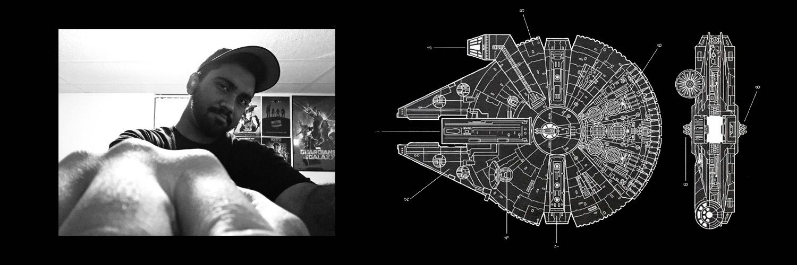

<!doctype html>


<html>  </html>


<head>
    
    <meta charset="UTF-8">
    <title>Zachary Moonilal - CART 211 </title>
    <link rel="stylesheet" href="css/style.css">   
</head>
<body></body>


<nav> 

<a href="index.html">bio</a>
<a href="readings.html">readings</a>
<a href="practice.html">practice</a>
<a href="projects.html">projects</a>

</nav>


<header> 

    <h1> Cart 211: Zachary Moonilal</h1>
    <h2> Concordia University</h2>
   

</header>

 

<article>
    
    <h1> Biography </h1>
    
    <p> 
    
    Hey guys! Welcome to my personal website for our awesome creative computing and network culture class. I graduated from digital arts and new media at Champlain college and currently specialize in computation arts at Concordia university. I chose this program in order to explore the reltionships between the complexities of the computer and how we could use different digital mediums to make art. Even though there is a lot of new information being thrown my way, I enjoy everyhthing we are doing to date. Eventually, I would like to continue my career in the 3D arts and specifically focus in level design. 
    </p>
    
    <p>
    My biggest dream is to work in the video game industry, specifically for companies such as BLizzard, Ubisoft and Warner Brother Games. My favorite colour is green and I collect a lot of graphic t-shirts. I'm obessed with anything Star Wars and I love reading books, graphic novels, comics and articles. Some of my favourite genres include science-fiction, fantasy and action. I also love atronomy and looking at the stars with my dad was one of my favourite past-times when I was younger. I have creatively adapted to the philosophy that because there is still so much about space that is unknown, make great use of your mind and imagine the countless possibilities out there. I am looking forward to constantly improving my skills in this class!
    </p>
    
     
</article>


<footer> 

<p> Concordia University Fall 2018</p>
<p> Student: Zachary Moonilal</p>
<p>Email: zach.astronomy@gmail.com</p>

</footer>


<html> </html>